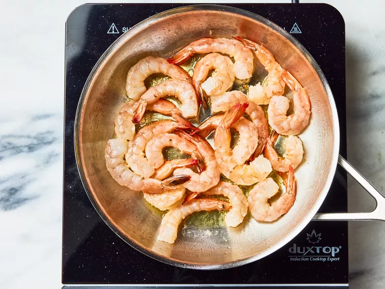
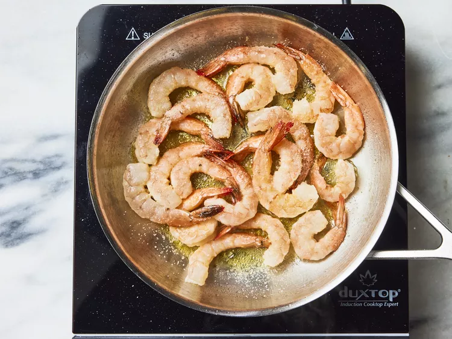
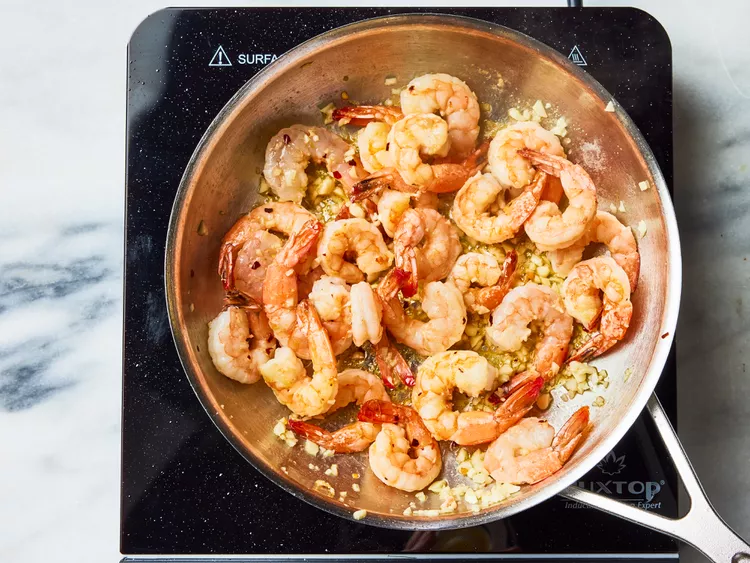
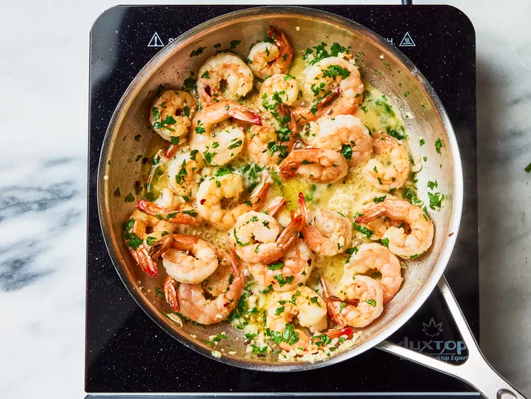
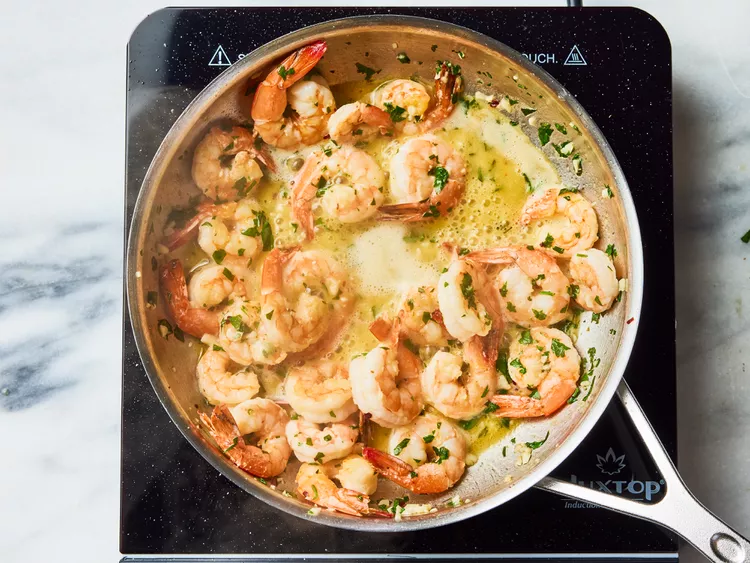
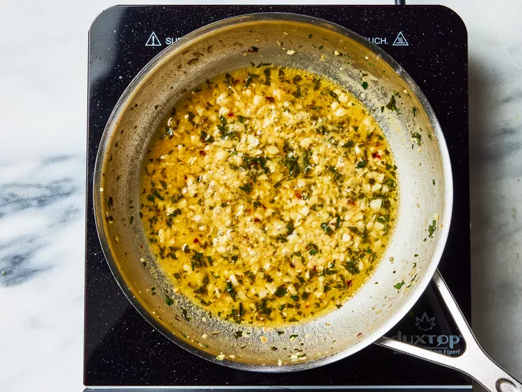

Home
Simples Garlic Shrimp

Description
Give this garlic shrimp recipe a try if you like shrimp and love garlic.
It's easy, fast, and absolutely delicious. I hope you enjoy it!
Why You'll Love This Recipe
This recipe uses a simple pan-sear method to give shrimp plenty of color
and flavor quickly.
Home cooks love how the buttery garlic and lemon sauce allows the shrimp
to shine.
Ingredients
- 1 ½ tablespoons olive oil
- 1 pound shrimp, peeled and deveined
- salt to taste
- 6 cloves garlic, finely minced
- ¼ teaspoon red pepper flakes
- 3 tablespoons lemon juice
- 1 tablespoon caper brine
- 2 tablespoons cold butter, cut into 4 equal pieces, divided
- ⅓ cup chopped flat-leaf parsley, divided
- 1 teaspoon water, or as needed
Steps
- Gather all your ingredients.

-
Cook sausage, ground beef, onion, and garlic in a Dutch oven over medium
heat until well browned.

-
Stir in crushed tomatoes, tomato sauce, tomato paste, and water. Season
with sugar, 2 tablespoons parsley, basil, 1 teaspoon salt, Italian
seasoning, fennel seeds, and pepper. Simmer, coverred, for about 1 ½
hours, stirring occasionally.

-
bring a large pot of lightly salted water to boil. cook lasagna noodles
in boiling water for 8 to 10 minutes. Drain noodles, and rinse with cold
water.

-
In a mixing bowl, combine ricotta cheese with egg, remaining 2
tablespoons parsley, and ½ teaspoon salt.

-
To assemble, spread 1 ½ cups of meat sauce in the bottom of a 9x13-inch
baking dish. Arrange 6 noodles lengthwise over meat sauce, overlapping
slightly. Spread with ½ of the ricotta cheese mixture. Top with ⅓ of the
mozzarella cheese slices. Spoon 1 ½ cups meat sauce over mozzarella, and
sprinkle with ¼ cup Parmesan cheese.

-
Repeat layers, and top with remaining mozzarella and Parmesan cheese.
Cover with foil: to prevent sticking, either spray foil with cooking
spray or make sure the foil does not touch the cheese.

-
Bake in the preheated oven for 25 minutes. Remove the foil and bake for
an additional 25 minutes.

All rights reserved to
All Recipes.